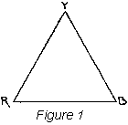
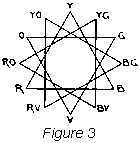
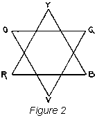
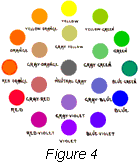
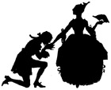

1926—The New-Way Course in Fashionable Clothes-Making
Lesson 36—Color Applied to Dress
Color Applied to Dress
Now comes the interesting subject of color. There is so much to say about it, yet in order to get to the very bottom of the subject it would be necessary to use some very technical terms and some more or less complicated material. I do not really think the majority of my students would care to go into the subject of color in exactly that way. To some it might be rather tedious reading and I do not want anyone to say that my lessons are dry and uninteresting.
I believe most people who are taking this training want to study color as they would any other interesting subject, for in this case they want to be able to choose the correct colors when making their own pretty clothes. Of course, if one can combine colors well in the selection of clothing, it will not be difficult to apply it to the redecoration of the living room, selecting material for draperies, glass curtains, fancy pillows and little things that help to make a house a real home.
The main object of color in a costume is to obtain a beautiful combination, which will grow more so the longer one looks at it. One problem is to get good color combinations in the use of materials, for texture is as important as color.
Few of my students, while making their own clothes, think of themselves as artists. Let us stop a minute—every time you make a new dress aren't you trying to make yourself just as attractive as you possibly can? If the dress is to be worn in the morning while you are doing your housework, I am sure you want to look just as nice as any of your friends. Every woman has a natural inborn pride and, of course, wants to look her best. If it is a dress to be worn to the office, you would be widely different from most people if you did not want to present a good appearance. Please do not misunderstand me and think I mean expensively dressed, indeed, I do not mean that at all, just neat and attractive without being overdone.
When you plan a dress or blouse you are building a picture in which, just as in a painted picture, or in a large building, designed by some famous architect, the lines and color must be well organized, rhythmically balanced, proportionate and fitting the purpose intended.
It is the proper choice in the putting together of color effects that you, as an artist in dress, will and must reveal in order to be a real success. The painter does not grind his own color, nor does he prepare his own canvas. As we all know, the colors he works with have a range of light and dark. To be sure these colors are limited compared to the beautiful colors furnished to us by nature, but is up to him to use his man-made colors to the best advantage. The same applies to you, for you do not dye the materials, nor do you have a thing to do with the different processes through which it must go before it is woven into cloth. However, you must use your own good judgment and combine these colors in exactly the right way. So you see it is within the power of all of us to reveal character and taste.
Take your lessons studied and practice the lessons to your satisfaction.
You will find it a real help in analyzing the color schemes, if you will watch your friends or people you see in the street cars, trains, or on the street. Select some fairly well dressed woman and judge her clothes as to color, keeping in mind whether or not the colors she has chosen go well with her particular type and figure. How could this woman improve her looks? By choosing another color as trimming could she be made to look more attractive, more pleasing to the eye?
Oftentimes the color scheme is harmonious in itself but will nevertheless violate the sense of harmony because it is not suitable to purpose. well chosen colors may look well on one type of person, but the same well chosen color may be very much out of place on this woman's sister who is light instead of dark. the colors which would look well on a tall, slim woman, who can rightly wear the broad collar, broad sash, elaborate border designs, would not be at all proper for the short, stout woman.
I am sure you can think of many examples along this line.
The age of the person plays some part in the selection of clothing, also the kind of a function at which the gown is to be worn. The season of the year must be considered, not only as the weight of material, but also as to color.
Perhaps you have seen an elderly woman with very severe features, wearing a dainty, much beflowered hat. It is not at all suited to her type, while a young girl with rosy complexion could wear this hat, and you would declare that it was made particularly for her.
Another violation as to suitability to purpose is noticed when a very elaborate dress is chosen to wear to business. There is really so much room for taste and color effects without resorting to the overdone dress for work. In fact, a harmony which combines common sense and neatness, with pleasing colors chosen in appropriate tones, will do a great deal toward making a favorable impression in the business world. Always remember this and pass on the good news to your friends, for many a good position has been lost merely because the prospect did not look like the quiet, neat, attractive, little lady the employer hoped to add to his office force. In this case clothes really did talk and regardless of the knowledge the young lady may have had stored away in her little head, the fact that she did not know the rules of choosing conservative and appropriate colors lost her a mighty fine position.
It is just these obvious facts which are so often recognized, yet so frequently neglected. For these very reasons I hope to give you some hints as to the color to be selected and the kinds of colors certain types of people may wear.
A Word on the Theory of Color
Colors of objects differ as widely as do their forms. Just as the form or shape of an object may be measured, so may the hue, value and intensity of the color be measured.
Hue
I want to explain this point thoroughly so you will understand exactly what hue means. It is so very important that each color word be kept in its proper place for unless it is, the study of color will be of little value to us. By hue we mean the name of the color such as red, yellow or blue. The difference in the warmth in the color is a variation in hue, or in other words, as red changes toward the orange it has become red orange and has changed its hue.
There are three fundamental hues—red, yellow and blue—which are commonly called the primary colors and from these all the other hues may be made, if mixed in the proper amounts. The triangle shown in Fig. 1 indicates the primary colors. Between the corners of the triangle, as for example the red and yellow, additional hues may be inserted, which really are the result of the combination of primary colors.
By the mixing of red and yellow we produce orange; yellow and blue combined gives green; and blue and red makes purple or violet. These colors, green, orange and violet are called the secondary or binary colors. As you will notice we are developing a color chart and are indicating the secondary colors by the second triangle which is placed over the first triangle as shown in Fig. 2. In order to produce one of these secondary colors, it is necessary that we use the two required primaries in equal amounts.
There are further hues known as the intermediate colors which we obtain by mixing equal amounts of a primary and a secondary and which will fall between the points of Fig. 2. Thus we finally have the completed color diagram as shown by Fig. 3.
You will notice that there are three primary colors, three secondary and six intermediate. Between each of these hues there are many variations depending upon the relative amounts of the primary and secondary colors used in producing the particular intermediate hue. All of the commercial colors, such as henna, gunmetal, jade and amber are merely different values of the intermediate hues. All such colors may be classified by their position in the color chart and described by the name of the hue which they match.
The color chart shown in Fig. 4 is made by substituting the hues for the letters shown at the points of the diagram in Fig. 3. By using the color instead of the letters I am sure you will get a much better idea, and this chart will be a great help when studying the different points about color. Refer to it often and study it carefully.
The gray tones shown in the center of the color chart will be explained later in the lessons.
Here is another interesting thing about color—the colors are divided into two groups, the warm and the cool hues. Red and orange belong to the warmest, blue and purple to the coldest. As we follow around the diagram through the green, yellow green and yellow, the colors become increasingly warm. The warm colors are the more pronounced and glaring while we find the cool hues are more quiet and reserved.
The warm colors tend to increase the appearance of size, whereas the cool colors reduce the size of the object. This principle is applied in dress designing in order to make the large, stout person appear smaller and the small, slender person to appear larger. Perhaps you have noticed a very stout woman wearing a large figured, warm colored dress. It may be her favorite color and material, but at the same time she could decrease her size by wearing a cooler color which would be darker, and choosing material which has a smaller, less conspicuous design.
As you might expect, certain colors are more properly used at one season of the year than at another. For instance, the appropriate spring colors begin with the blue and progress around the color chart toward the yellow and continue through the orange for summer, on to the red purple for autumn and finally returning to the blue for late winter.
The warm colors are much more trying on the eyes and nerves, than the cooler shades, especially when used to excess. At the same time the very cold shades may become depressing if not used in good taste.
Value
The value of color is the measure of lightness and darkness. At one end of the scale is white, showing the greatest amount of light, and at the other end of the scale is black. None of the colors shown in the color chart, or any of the intermediate colors not shown are as light as white or as dark as black, but all fall between these two extremes. The value of any particular hue may be determined by properly locating it between extremes of light and dark.
The proper use of color values is of the greatest importance in dress designing, for just as the warm or cold hues add to or detract from the appearance of size, so do the color values. The lighter values increase the size of an object and the darker values have an opposite effect. Doubtless, you have been aware of this fact, for white clothing always makes a person look larger than does a dark color. By using two colors of nearly the same value, very beautiful effects may be obtained but, of course, this may be carried to extremes, and the result would not be pleasing. If a decided contrast is wanted, then use colors having entirely different color values. Strong contrast of value tends to attract attention and should therefore be used carefully in dress design.
Intensity
Intensity is the measure of brightness and fulness of a color. As any one of the colors of the color chart approaches gray it is said to increase in dullness. To produce a neutral gray, two of the complementary colors in certain proportions are mixed together. And so you won't be confused with all these color words, I am going to tell you that complementary colors are those which are directly opposite each other on the color chart. That is, violet is the complement of yellow, green the complement of red and so on. Refer to Fig. 4 and I am sure you will understand exactly what is mean by complementary colors.
For backgrounds and large areas colors of lower intensity are preferred to the more brilliant shades, as they are much less trying.
We have discussed the way in which all of the colors shown in the color chart in Fig. 4 have been made by combination of the primary hues, with the exception of the gray tones shown in the center of the chart. These are most important members of the color family, for it is seldom that any of the colors in their fullest intensity or brightness are desirable in dress designing.
When two complementary colors are mixed their intensity is lowered, that is, the color is not as bright as any of the colors shown in the outer circle of the chart. It is in this way that the gray tones shown in the center of the chart are produced.
There are, of course, innumerable variations of intensity between any two of the complementary colors. You will notice that the intensity varies from full brightness to complete neutrality at the center and then increases in brightness to the full intensity at the outside of the chart. Strictly speaking the mixture of the complementary colors in the correct proportions should produce pure white, but because the man-made paints or dyes are more or less impure, the neutral gray results.
You may be wondering what this discussion of the intensity of color has to do with the problem of dress. Indeed, it plays a very important part, for by knowing that you can emphasize a bit of bright color by surrounding it with a dull one of the same hue or by combining the color which you wish to bring out with a neutral color, such as white, the desired effects can be obtained. It is desirable to soften the intensity of a color and this may be done by combining it with a large are of bright color of nearly the same hue.
Be sure that you do not lose sight of the fact that your good taste may be more often shown by the intensity of the colors you wear than by any other element of your dress. A small person may take much greater liberties in the use of colors of nearly full brightness than the large person.
Before we go to the application of the theory of color to the practical problem of color applied to dress, I would suggest that you review all of the lesson up to this point, study carefully your color chart and try to find as many colors as possible which you can place between those shown in the chart. Try to classify in this way bits of yarn, pieces of silk, may recognize quickly and accurately the hue, value and intensity of any color or group of colored paper, or even silk threads. In this way you will develop your color sense so you may recognize quickly and accurately the hue, value and intensity of any color or group of colors with which you may have to work.
Beautiful Colors Correctly Used
In order that you may always have beautiful clothes which will be the envy of everyone who looks at them and which will increase your natural attractiveness, the choosing of colors and the combination of them must be carefully considered. When you have learned to do this you will have accomplished one of the most important steps in the art of beautiful clothes-making. It is just as essential to fully understand and make use of the proper application of color in design as is the application of any of the other elements of design.
Color Types
It is quite difficult to lay down hard and fast rules as to the colors which different individuals may wear. This may be readily understood, as hardly any two people are identical as to color of hair, eyes, skin and general contour of features and body. All of these points have a direct bearing on the colors which are suitable to be worn. For example the small, frail, flaxon-haired blonde may be ever so attractive wearing certain colors which on the blonde of practically the same coloring, but having a very large figure, would be most displeasing.
It will be necessary for you in applying colors in the making of clothes for yourself or for others to study carefully the effect produced by colors of different values and intensity in the particular case with which you are dealing.
In the following pages I am going to give you a few suggestions as to the colors suitable for the more common types, but it must be understood that this cannot be applied rigidly in all cases. Frequently you will find that by altering the value or the intensity of a certain hue or by combining it with some other color in the manner explained earlier in the lesson you will be able to produce exactly the effect which you have desired.
If by chance you have found through your own experience that some one of the colors indicated as being suitable for your general type is unbecoming follow the suggestion I have given you in regard to combinations of hues or the changing slightly of the value of the color or possibly use one of a different intensity, and you will be surprised to find that you have been passing up that particular color which is very becoming to you.
The Blonde
In choosing clothes the blonde must be especially careful about color. Some blondes work by the rules of contrast, that dark colors make their pale coloring seem even more delicate. It is commonly thought that this idea really works.
For blondes with gray blue or green eyes, there seems to be the opinion that grayish colors, that is, blues, greens and violets, are far more becoming than the warm brownish tones. This isn't true when speaking of the fair-haired, brown-eyed person, whose skin is somewhat inclined toward the brunette type and who usually looks well in shades of brown.
Of course, if the blonde has golden hair and the right complexion she may wear bright blue or red, even shades of rose may be chosen and worn well. Pale blondes want to be ever so careful to avoid colors which make them look dull or very pale.
I would like to call your attention to the fact that some so-called pale shades have a warmth that is flattering, and can be worn. the healthy, red-haired, plump blonde may wear just about any color providing it is not too bright, for if this is the case the person will look larger than ever.
As a rule, the blonde should not wear tailored clothes. She is not at all the masculine type, so she will look much better in simple, soft effects. She should not wear tweeds or very heavy materials. Her type calls for jersey, crepes, kashas, velveteens and chiffons which are much more suitable.
Heavy jewelry should be avoided by blondes. She should select small beads, dainty chains and stones such as jade, amethyst, turquoise and topaz.
Titian Haired Blonde
The titian haired girl, that is the one whose hair may be of the so-called auburn shade or red, should be careful not to intensify this feature to too great an extent, but on the other hand, she must not detract from the beauty of her hair.
As we have learned, the complement of a color tends to emphasize it, therefore she should avoid the light shades of green which from your color chart you will see is the complement of red. Some of the very darkest shades of green may be very becoming. The bright blues also tend to bring out the redness of the hair and should therefore be avoided. Navy or midnight blue and the soft, silent tones should be very pleasing. The deep shades of brown, also black and the cream and ivory hues, will be found to be very good.
The Brunette
Perhaps you envy your sister or a friend who is a decided blonde, but do not think for one single second that all the pretty colors can be worn by this type. Almost everybody loves red, and who can wear it better than the brunette who has dark brown or black hair?
If the brunette has a clear skin or good color, any shade is possible. If she is pale she should avoid colorless dull or pastel shades. The brunette having an olive complexion, especially if she is young, should never wear dark colors as they tend to make her look older. The warmer tones by contrast emphasize the luster of the dark hair and are therefore desirable. It is generally best for the brunette to use the warm colors such as reds, red orange, yellow, etc.
Whenever a brunette chooses to wear very dark shades such as dark brown, black, or midnight blue, some bright color should be added such as orange or certain shades of red.
The Gray or White Haired Lady
Very frequently the gray-haired lady tends to wear black, which is very good, but she must not forget that a touch of white in the form of a yoke or collar to relieve the black near the face is most necessary. White of course, being a neutral color, is very good for this type.
Purple in certain shades is generally quite becoming, but inasmuch as the complexion of older people frequently tends toward the yellow, bright purples should be avoided, for being the complement of yellow it tends to emphasize that color. A person who when younger found the warm colors the more becoming must remember that as the hair begins to turn gray and the color of the skin is not so clear that the cooler shades should be more and more used. Some of the dull warm shades may also be pleasing, if the color of the eyes and the features warrant their use.
A Sallow Complexion
If you have a sallow complexion great care must be taken in the choice of colors. Of course there are certain colors that will help a great deal. In fact, it is far better to select those which will reflect color in the cheeks, and in order to do this choose warm tints such as red, shades of rose, a gray color having a tint of pink or colors of this particular type.
Perhaps if you belong to this group of people you wish to wear purple or shades of purple. Do not do this for the purple only helps to bring out the sallowness of the skin and this is what you want to avoid. Likewise black should not be worn by this particular type of persons. If the complexion is very sallow avoid yellow, tans or browns for it only tends to make the complexion look yellow.
Shades of blue green, navy and might blue will help to bring out the color in the cheeks and in this way make the skin look less sallow. However, be very careful in the choice of shades of green, for bright greens are hard to wear by most types and should be carefully avoided by this particular one.
Florid Complexion
If you have a florid complexion, do not select red or shades of red. A repetition of the same color, even though the tones and shades are different will bring out the color. So if your face is inclined to be flushed do not choose a color that will make this more prominent. I am sorry to say all bright colors must be omitted if a person having a florid complexion wishes to distract the attention from that fact. It is hard to do this for a little red or pink for trimming is ever so tempting and it really takes a great deal of self-control to keep from choosing these colors when one loves to wear them.
However, purples may be worn, also dark blues, dark brown or black can be worn. To be sure, light shades are attractive for some people, but for this type of person usually darker shades should be chosen.
Colors Becoming to Nearly All Types
Nearly everyone will find it a fairly safe rule to incline toward the use of colors having a low value and intensity, that is, dark and dull shades. Dark green, for example, may usually be worn where the light brilliant shades would be entirely out of the question. Navy blue, midnight blue and the darker shades of gray blues will usually harmonize with most types. If you are fond of red and yet find it impossible to look your best in the bright shades do not be discouraged, for there is probably one of the dark reds which will just suit you.
So many of us who like the purple or violet colors, but find the lighter shades and especially the blue violets unbecoming, may be able to indulge to some extent in the use of dark and red purples. Black, of course, can be worn by most people, especially if relieved by a bit of color or a touch of white near the face.
There are also some light shades which can usually be worn. However, be sure to study your type carefully before selecting a light or brilliant color. White, light blue, green and light red orange will usually be quite satisfactory.
Choose These Colors Carefully
Just as there are certain colors which are usually pleasing and becoming, there are others which nearly all people find rather trying and hard to wear. As a general thing we must all avoid the pure hues having the full intensity. You know how difficult it is to wear a very brilliant green, so unless you are of exactly the right type be very careful in selecting this color.
All of the bright shades of purple are trying to most complexions. Bright reds and blues can be worn by very few people, whereas the duller shades of these colors are found to be quite pleasing to many types.
A Few Concluding Hints
We have discussed the theory and the practical application of color as applied to dress, in order that you may develop a harmonious treatment of the whole problem.
You have learned that best harmonies are produced by using colors of the same family, that is, use the warm shades together or the cool shades together. of course, in order to avoid monotony a bit of contrasting color usually produces the most becoming arrangement. Remember that you should never use complementary or contrasting colors in large areas, but instead use colors which harmonize for the large areas, with the small portions of the complementary shades to lend interest to the entire dress.
Always be sure that you are selecting colors which bring out your best features and tend to obscure those not so attractive. Study your type and if you fall in the classification known as the warm type, that is, those of high coloring, brown eyes, red or dark hair, the most satisfactory colors will be those falling on the arm side of the color chart. If, however, you are of the cool type, that is, the typical blonde with golden hair and fair skink the cool colors will suit you much better.
Some people of the warm type have a fondness for the cool colors and if they desire to wear them may be able to do so by suing those which approach the warm tones, such as the dull blue and blue green rather than the bright cold blue.
You may have some peculiarities of coloring of the skin, hair or eyes which you may wish to subdue or emphasize, depending on whether those peculiarities are attractive nor not. City dwellers in particular are apt to have rather colorless skin if not actually yellow or sallow. If you fall in this classification avoid the very bright colors as they are sure to bring out the sallowness by a striking contrast. don't forget, if you are a brunette and lack the high coloring frequently found among this type, that the dull, warm colors will look especially well on you.
Just as the dull, warm shades are best for the brunette with the sallow skin, so are the dull, cool colors desirable for the blonde having a rather yellow skin. As a contrast to the sallow complexion is the rather florid type who has an over-supply of color in the cheeks. the colors which approach the black, such as very dark purple, dark brown, or dark blue, will subdue the high coloring of the cheeks and make it less noticeable.
Haven't you noticed a person whose eyes were such a beautiful blue? It may be if you had seen her wearing some other dress you would never have been impressed at all, for it is quite likely that she knew how to bring out the depth of coloring in her eyes by selecting just the right shade.
By the use of a color of the same hue as the eyes, but of a lower value and intensity the color of the eyes will be more pronounced, a bit of the complementary color near the face will emphasize the color of the eyes.
Many people have hair which seems to lack life and coloring. Occasionally there is a woman whose hair is literally her greatest charm, but we are not all so fortunately blessed. There is a remedy which we can apply without resorting to any artificial methods of actually changing the color of the hair, just as we are able to force or subdue the color of the cheeks or the eyes, so we can bring out the beauty of the hair by the proper selection of the colors which we wear.
You have learned that value contrasts tend to emphasize color. By wearing any color which is lighter or darker than the hair its color will be brought out. Of course, you must use care in the selection of the color that it agrees with the principles of color harmony. The complementary colors, or those which are opposite each other on the color chart will emphasize the color of your hair just as a bright green and red in the same area tend to make each other stand out more prominently than if either is used alone.
Your color sense can only be developed by continually studying the effects produced by color upon the individual. Whenever possible try using colors varying in value, hue, and intensity, and notice the almost startling difference which will be produced in your appearance or that of the person for whom you are designing the dress.
You will very soon be able to detect the difference in appearance caused by even a very slight change of color. The general figure of the individual, the coloring of her skin, hair and eyes will very shortly suggest to you the proper colors for her to wear. Even the slight touches of contrasting colors used in ornament, will suggest itself to you instinctively as you educate your color sense.
I hope you have found the study of color interesting, for it is so very important. The subject might have been covered in a much more technical way, but I believe it is your desire to learn the practical side of the question with just enough of the theory so that you may understand why certain of the colors go together and make a beautiful dress while others clash so violently.
The appreciation of color is instinctive with nearly all of us from infancy, although sometimes we do not realize it. Color is manifested in all of Nature for though she molds everything into beautiful shapes, harmonious as to line, perfect as to balance, and with the rhythm of the master hand, without color, her work would be flat, meaningless and without inspiration. Beauty brings happiness to us, makes us more cheerful and life in general more pleasant, and nothing contributes more toward beauty than the proper use of color.
Lesson 36
Questions
- What is the main object of color as applied to dress?
- What is hue?
- Name the primary colors.
- Name the warmest colors.
- Name the coolest colors.
- Do the warm or cool colors tend to increase the appearance of size?
- What is meant by the value of color?
- What is intensity?
- What colors should not be worn by the person with sallow complexion?
- What shades of blue should be worn by the Titian blonde?